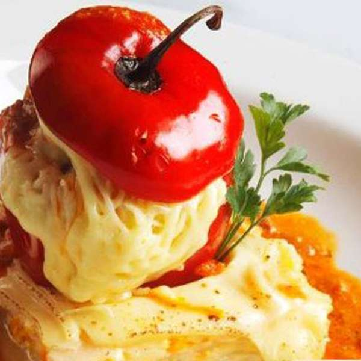
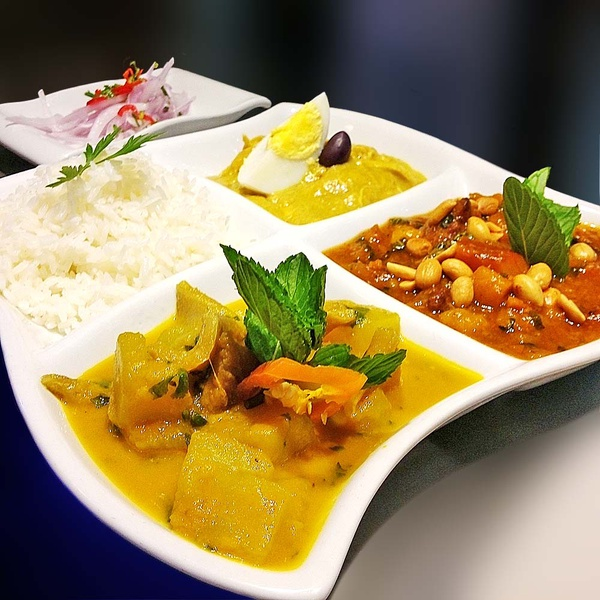
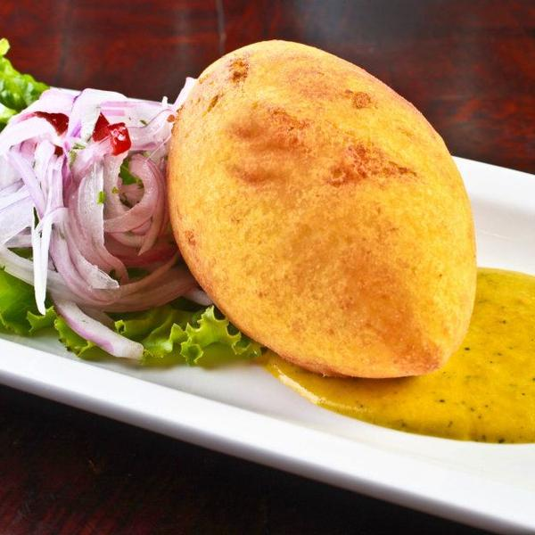
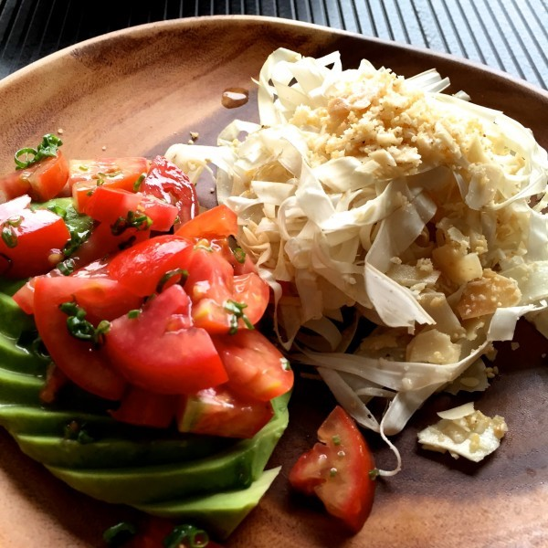
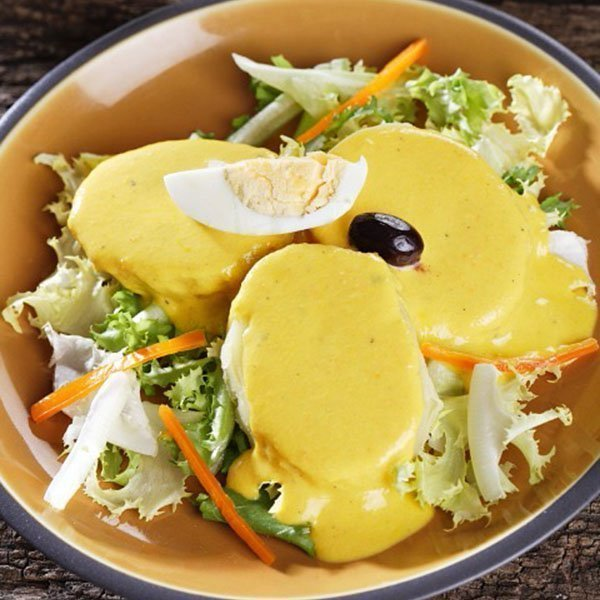
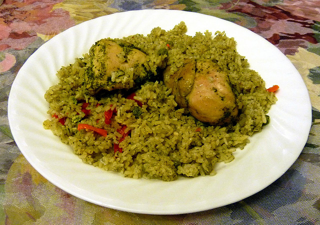
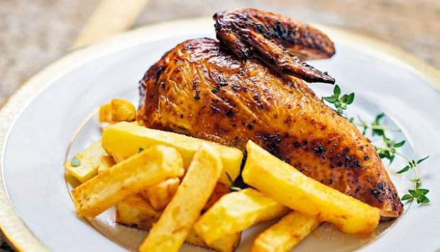

Blog de gastronomía






Historial
Arroz con pollo
Pollo a la brasa
Lomo saltado
Cebiche de pescado
Plato típico
Chifa
Ají de gallina
Papa rellena
Arroz chaufa
Escabeche de pollo
Estofado
Caldo de gallina
Arroz con pollo
Un plato nutritivo peruano
11 de noviembre 2018
El arroz con pollo es un plato típico de España y América Latina con variaciones regionales según el país. Consiste en arroz cocinado con pollo, en presas o desmechado, verduras, y sazonado con especias
Hola, Es considerado un platillo típico de la gastronomía peruana y uno de los de mayor consumo.
Pollo a la brasa
Tradición peruana para el mundo
10 de noviembre 2018
Pollo a la brasa es la denominación que se da en el Perú al pollo asado al carbón, a la leña o a gas en un sistema rotatorio. Es considerado un platillo típico de la gastronomía peruana y uno de los de mayor consumo, incluso por encima del cebiche, el chifa y las especialidades de la comida rápida.
Hola, es también un plato típico de España y América Latina con variaciones regionales según mi país